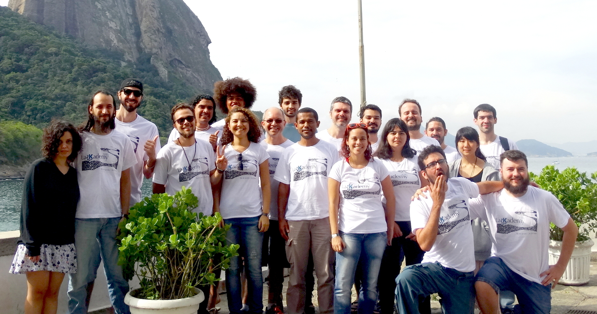

Em 2016, ano em que a comunidade KDE completou seus 20 anos de existência, o LaKademy aconteceu no Rio de Janeiro, nas dependências da UNIRIO (Universidade Federal do Estado do Rio de Janeiro).
O evento ocorreu entre os dias 26 e 29 de maio, no espaço do Programa de Pós-Graduação em Informática (PPGI) da UNIRIO, no Campus da Urca. Um relato completo (em inglês) pode se visto nessa página. Imagens do evento estão disponíveis aqui. Veja a fotos dos participantes abaixo:
